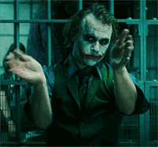

Introduction to Virtual Reality
- Seeing is believing
What we are going to talk about?
- Virtual Reality
- The Matrix
- Concepts
- WebGL
- Implementation using ThreeJS
- Concern and Challenges
- Industry Use Cases
- Conclusion
Virtual Reality
- The definition of ‘virtual’ is near and reality is what we experience as human beings. So the term ‘virtual reality’ basically means ‘near-reality’.
- Virtual reality is the term used to describe a three-dimensional, computer generated environment which can be explored and interacted with by a person.
- Sometimes referred to as 'immersive multimedia' because of being a computer-simulated environment that can simulate physical presence in places in the real world or imagined worlds
- Virtual reality can recreate sensory experiences, which include virtual taste, sight, smell, sound, and touch.
Concepts
- The concepts behind virtual reality are based upon theories about a long held human desire to escape the boundaries of the ‘real world’ by embracing cyberspace.
- Once there we can interact with this virtual environment in a more naturalistic manner which will generate new forms of human-machine interaction (HMI).
- Beyond the keyboard and mouse.
- Freedom within the 3D virtual environment.
- Problem solving with virtual reality.
- Opinions differ on what exactly constitutes a true VR experience, but in general it should include:
- Three-dimensional images that appear to be life-sized from the perspective of the user
- The ability to track a user's motions, particularly his head and eye movements, and correspondingly adjust the images on the user's display to reflect the change in perspective
WebGL
- WebGL (Web Graphics Library) is a JavaScript API for rendering interactive 3D computer graphics and 2D graphics within any compatible web browser without the use of plug-ins.
- WebGL is integrated completely into all the web standards of the browser allowing GPU accelerated usage of physics and image processing and effects as part of the web page canvas.
- WebGL elements can be mixed with other HTML elements and composited with other parts of the page or page background.
- WebGL is based on OpenGL ES 2.0 and provides an API for 3D graphics.
- It uses the HTML5 canvas element and is accessed using DOM interfaces.
- Automatic memory management is provided as part of the JavaScript language.
- A non-exhaustive list of libraries that provide many high-level features includes three.js, babylon.js, O3D, OSG.JS, CopperLicht and GLGE.
- There also has been a rapid emergence of game engines for WebGL, including Unreal Engine 4 and Unity 5.
WebGL Example - Google Books
Implementation using ThreeJS
- Include three.js library
- Create WebGL Renderer
- Define camera
- Add light
- Create a scene
- Make a mesh(object)
- Render the scene
Concern and Challenges
- Motion sickness.
- Addiction.
- Disengagement with real world.
- Psychological damage: identity problems.
- Lack of Privacy.
- Behavioural changes, specially rise in aggression.
- Possible impacts on real body: mainly eyesight & headache due to eye strain.
- VR has been heavily crticized for being an inefficient method for navigation and non-geographical information.
- Repetitive Strain Injury(RSI) can also result from prolonged use of VR headsets and gloves.
- Generally the cost involved in creation of a VR system is too high.
- Programmers are still grappling with how to interact with virtual environment.
Industry Use Cases
Conclusion
- Though the disadvantages of Virtual reality can disturb the human's perception ability, it's advantages in different fields makes it user friendly.
- The sole objective of virtual reality is to give the user an environment as realistic as possible and a trilling sensory experience.
- The technology of virtual reality is advancing rapidly and it won't be long before it becomes a most exciting source of entertainment of our homes.
Questions?

That's all, folks!
Thank You
/